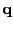
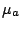
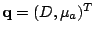
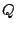
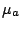
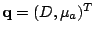
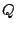

We extend evaluation of the iteratively regularized Gauss
Newton method for the solution of the parameter estimation
problem in Optical Tomography. The general problem of
optical tomography requires the estimation of the underlying
model parameters
, for example the coefficient
of diffusion  and the coefficient of absorption ,
(i.e.
) that belong to a parameter
set . The conditioning of the problem with respect to
each parameter set is different. We investigate the use of
an alternating parameter decomposition approach for solution
of the nonlinear inverse problem with regularization.
Contrary to statements on the general nonlinear least
squares problem in standard references eg Bjorck 1996 , we
find that decomposition with respect to the parameter set
allows solution of the regularized problem with the use of
appropriately chosen weighting schemes.
and the coefficient of absorption ,
(i.e.
) that belong to a parameter
set . The conditioning of the problem with respect to
each parameter set is different. We investigate the use of
an alternating parameter decomposition approach for solution
of the nonlinear inverse problem with regularization.
Contrary to statements on the general nonlinear least
squares problem in standard references eg Bjorck 1996 , we
find that decomposition with respect to the parameter set
allows solution of the regularized problem with the use of
appropriately chosen weighting schemes.